OITAVO ANIVERSÁRIO
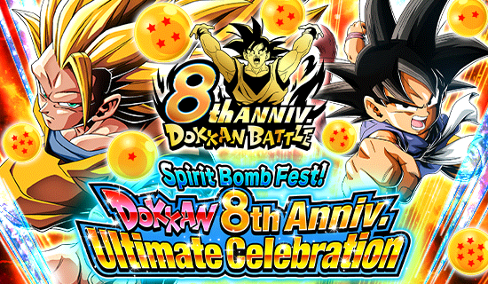
Grande aniversário.
Essa foi uma celebração interessante, já que no JP ela veio logo depois da celebração do superhero que deixou geral sem DSs, mas que ainda sim conseguiu ser boa.
Apesar de ter muita coisa boa, essa é discutida como uma das celebrações menos hype de todas, onde os cards principais são bons mas não tão hype quanto outros, e junto com uma coisa dita numa live do JP sobre a celebração q dizia que tudo até o décimo aniversário já está planejado e que o oitavo teria cards que nunca foram principais antes (oq excluiria goku, vegeta, fusões e etc), mas que acabou não sendo verdade e eles só disseram q falaram errado sem querer.. enfim, o omatsu sendo omatsu
^
Sumário (clique para ir a qualquer um dos tópicos)
- GT BOYS
- eis e nuova
- Z BOYS
- gotenks e piccolo
- eza do super vegetto phy
- Eza do Super Buu STR
- Goku Carnival AGL
- Gohan Carnival INT
- Eza do Goku ssj genki dama absorvida
- Eza do Goku ssjb kaioken
- Eza do Mr.Satan F2P
- Babidi/Majin Vegeta INT
- EZAS DAS FUSÕES
OS GT BOYS
 & Super Saiyan 4 Vegeta")
Grandes GT boys.
Um card q no lançamento já era considerado por muitos o n.1 do jogo ou pelo menos top 2, e tem belos motivos pra isso.
Esse card tem literalmente o mesmo kit dos Z boys, só q o oposto, já que ambos tem:
- Stack de 50% no ultra SA
- Stack de 30% no SA
- Menos ki e mais defesa no slot 1, e mais ki e mais ataque no slot 2 e 3
- Potencial de lançar 3 supers por turno sem contar o hidden potential
- Ganham ki infinitamente a cada super feito
- Buildam 50% de alguma coisa a cada super feito
Mas eles ficaram com o lado melhor da moeda, já que eles stackam ataque ao invés de defesa, oq transforma eles em semi-nukers já que caso vc pegue um triplo super várias vezes, eles ganham ataque muito rápido.
(opinião pessoal: esse card não gosta muito de dar 3 supers pra mim ou pro goresh, oq é triste)
E falando do triplo, é bom q vc pegue pq vc talvez se lasque caso n consiga, já que os 50% q eles buildam é de redução de dano, e a defesa deles não é exatamente o ápice do jogo
Claro, pós-supers eles ficam com uns 400k tranquilo, mas ainda sim, deixe o card bem longe do slot 1 pq o 100% de defesa a mais não é muito pra eles, mas caso vc deixe (maluco), como eles stackam ATK, os 100% de ATK q vc ganharia no slot 2 e 3 não fazem tanta falta.
No geral um card balanceado (ou não né) onde o turno mais perigoso deles é o 1 e depois nunca mais, tem link skills decentes, mas não tão boas pela falta de saiyan roar, a leader skill é muito boa, entram em um monte de time, animações bonitas, típico card de aniversário mesmo
Até aí tranquilo, mas quando vc receber pelo menos 4 ataques ou cair abaixo de 50% de HP literalmente a qualquer momento, o jogo muda.
O standby:
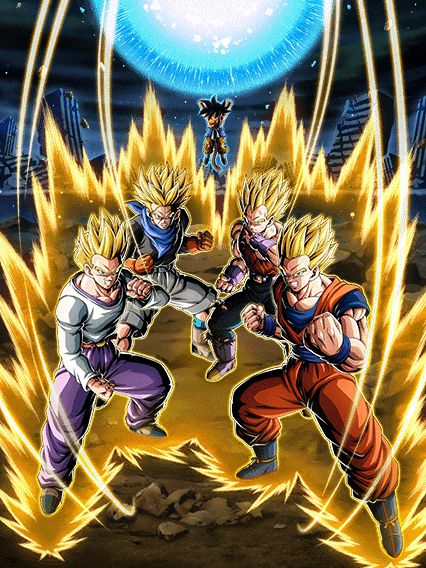
O segundo standby mais quebrado do jogo.
Esse até o momento (setembro 2023) é o único card standby que ataca e eu acho bem justo q outros não fazem isso.
A proposta aqui é bem simples, esse card dá dano, mas muito dano mesmo. Eles tem 330% de ATK bruto, em cima de tudo q vc stackou antes de usar a standby, e fica mais absurdo quando ele aumenta mais em 50% no super
Parte dos 330% mencionados acima vem do mais quebrado e absurdo suporte do jogo, onde o vegeta dá simplesmente 8 de ki e 80% de ATK pra TODO MUNDO, o cara não tem nem uma restriçãozinha de classe, só vai 80% e cabou
Acho q eu nem preciso falar do quão quebrado é esse suporte, não só ele resolve o problema do fraudehan (parabens, "beast"), mas tmb deixa qualquer nuker tipo o gohan agl mais quebrado ainda, sem contar q esse vegeta linka bem com a standby dos Z boys, deixando a genki dama deles ainda mais absurda.
Agora q eu já falei sobre o quão bom é o suporte 69 vezes, só falar sobre o real propósito do card q é morrer.
O card dá um dano absurdo mas não tem defesa e vai morrer pra qualquer coisa, oq vai ativar o revive-counter que vai dar ainda mais dano e curar 100% da vida, oq é totalmente balanceado e nem um pouco injusto, já que pós revive vc volta pro card normal como se nada tivesse acontecido e continua com seus 50% de redução de dano
Vale mencionar que não é interessante largar ele no slot 1 pra morrer de propósito já q ele aumenta o ATK em 50% no ultra e isso contra pra genki dama, então é melhor deixar no slot 2 ou 3 ou deixar pra usar a standby quando tiverem muitos ataques em um lugar só.
Eis e Nuova 💀💀💀

...pq?
Qual era o objetivo desse card?
Buffar GT bosses? Não
Ajudar os GT boys? Tmb não
Ser útil em alguma fase? Impossível.
Basicamente eles são orb changer mas tem o problema horrível de ser orb changer e precisar dos próprios orbs que eles criam, ou seja, vc deveria colocar eles no slot 1 mas não tem como pq eles são horríveis 💀
Em resumo, vc deveria pegar 7 orbs com eles mas vc não vai pq eles são horríveis.
Já falei das 3 CATEGORIAS q eles tem?
OS Z BOYS

O card que não sabe se vence ou não as alegações de fraude.
Diferente dos GT boys que já foram logo considerados top 2 no lançamento, os Z boys ficaram um pouco pra trás, estando ali no top 5, e tem motivo pra isso tmb
Esse card tem o kit igual ao dos GT boys, só q o oposto deles
A grande diferença é que os Z boys ficaram com o lado pior da moeda, oq ferrou demais eles e dificultou muito mais a situação do card.
Sendo o oposto dos GT boys, eles stackam DEF ao invés de ATK, oq é maravilhoso, certo? Afinal de contas eles podem dar até 3 supers sem o hidden potential e stackam muito rápido, mas aí q tá, não tão rápido assim.
O maior problema tá na outra habilidade deles, já q por algum motivo bizarro o dokkan considera redução de dano e crítico coisas iguais, e já que os GT boys ficaram com a redução de dano...
No geral oq mais quebrou o card foi isso, eles não terem nenhuma habilidade defensiva a mais além de defesa bruta
Tipo legal, eles chegam em 1 milhão de defesa fácil em alguns turnos, mas esses "alguns" podem demorar até demais, e talvez vc não chegue lá já q por terem só defesa, se vc for pego por um super attack brabão vc vai de lojas americanas fácil
E claro, eles podem até lançar no máximo 4 supers todos com 50% de crítico, mas como eles não stackam ATK, eles talvez não quebrem tanto expectativas, apesar de eles sim incinerarem qualquer boss int como se fosse nada.
Então tá, eles não tem nada pra ajudar a defesa deles na base certo? Bom, se vc atacar 4 vezes ou cair abaixo de 50% de HP..
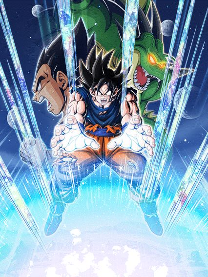
O provável standby mais quebrado do jogo.
No que eles pecam na defesa na base, eles compensam totalmente aqui
O vegeta não ataca, mas ele é praticamente invencível, já q ele tem 250% de defesa, defesa ativa e 8% de redução de dano por orb pego, onde se vc pegar 13 orbs, vc tem 104% de redução de dano e absolutamente nada no jogo consegue encostar mais no vegeta (pode até ser quase impossível sem a bulma LR ou itens mas se vc pegar 23 orbs vc vai ter 184% de redução de dano oq é só um pouquinho alto)
E claro, tudo isso em cima da defesa q vc stackou antes, então eu acho q eu não preciso explicar mais, o vegeta é invencível e é isso.
Sobre a standby em si, vc acumula energia pegando orbs, e se vc pegar 38 ou menos vai ver uma animação muito linda mas não é oq vc realmente quer então é meio q um disperdicio de animação mas enfim
Com 39 orbs OU MAIS vc ativa a super genki dama q vai pegar os 500% de ATK q vem na passiva do vegeta e juntar com mais 780% (isso com 39 orbs), super balanceado
É meio óbvio mas vc pode sim supercarregar a genki dama e aumentar seu ATK em 1360% e tals, com ajuda da bulma LR fica até bem fácil fazer isso
Eu não preciso nem dizer q a genki dama supercarregada com crítico é provavelmente um dos maiores se não o ataque mais forte do jogo, já que praticamente nada sobrevive a um ataque assim.
A única falha do vegeta é o fato dos 50% de crítico na forma base deles não passa pro standby e por isso a pessoa precisa colocar crítico no hidden potential pra critar a genki dama, já q ela sem crítico com desvantagem de cor é praticamente uma cócega nos bosses.
GOTENKS E PICCOLO KKKKKKKKKKKKK

Eles stackam.
Esse é um daqueles cards bizarros que não ajuda o card principal em nada e é do tipo ainda mais estranho de ter um super de 11 de Ki e outro com 12
Eles stackam ATK no super de 11 e DEF no de 12, oq é decente se eles tivessem stats bons e uma passiva que não tivesse 50% de ativar tudo
Eles curam vida por rainbow orb pq sim e tem 50% de chance de dar um super adicional, uau que personagem incrível
No geral um card inútil que só serve pra passar raiva quando vc pega um featured no banner e são eles 💀
eza do "super" vegetto phy
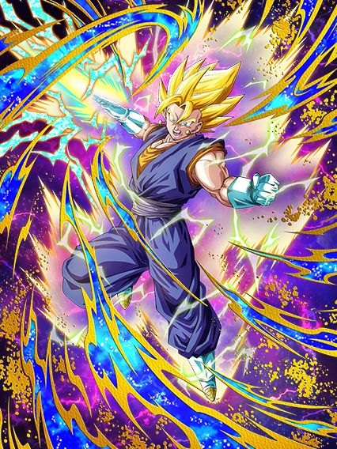
Realmente a fusão entre o irmão do raditz e o parceiro do raditz.
Esse eza foi.. algo
Algo que concerteza não prestaram atenção fazendo.
Esse vegetto era um dos cards mais antigos que precisava de eza e decidiram finalmente dar o buff q ele precisava.. só que passaram um pouquinho longe
Esse card é literalmente um tank de ataques normais e.... é só isso mesmo, ele não faz mais nada
O gênio incompreendido na akatsuki decidiu que seria hilário se o vegetto tivesse 80% de redução de dano mas só pra ataques normais e mais nada, fazendo ele morrer pra qualquer super pq a defesa dele é horrível
Mas claro, assim como todos os outros 5904 personagens recentes, ele builda recebendo ataque, acho q só é difícil saber oq exatamente ele builda
Ele precisa de um total de 6 ataques pra buildar o ATK dele (q não existe então não faz diferença nenhuma) e 9 ataques pra ganhar mais ki, mais defesa (q não serve pra nada) e 30% de chance de crítico q junta com os outros 30% q ele tem de base, o problema desse crítico é que de novo, o vegetto não consegue dar dano, então não adianta ele critar.

Foi triste oq fizeram com esse card, tipo beleza, ele é um personagem invencível contra ataques normais e tem counters, mas não adianta já que ele no turno 1 tem genuinamente nenhum ATK na passiva e mesmo buildado os counters dele não chegam nem a 1 milhão de dano, sendo q o vegetto str de 2020 dá quase o triplo disso
Infelizmente ele é apenas um card meme que ficou conhecido por geral como imã de super attack (ou super magnetto) por estranhamente sempre levar supers e morrer já que ele não consegue tankar.
Eza do Super Buu STR
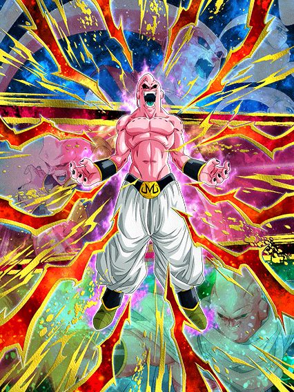
Um rapaz de muitas faces.
Bom, esse cara tem transformações demais então irei ser breve
Na forma base ele n tem nada demais, alguns buffs aqui e ali e ganha um pouco mais de defesa levando um golpe antes de atacar
Esse cara só fica interessante quando chegar no turno 5, onde ele vai absorver alguém de acordo com seu HP
Se seu HP estiver abaixo de 49%, ele vai absorver o Piccolo
Se estiver entre 50% e 79%, ele vai absorver o Gotenks
E se estiver acima de 80% e ABAIXO de 100%, ele absorve o Gohan (essa é uma informação que usaremos mais tarde)
Começando pelo buutenks
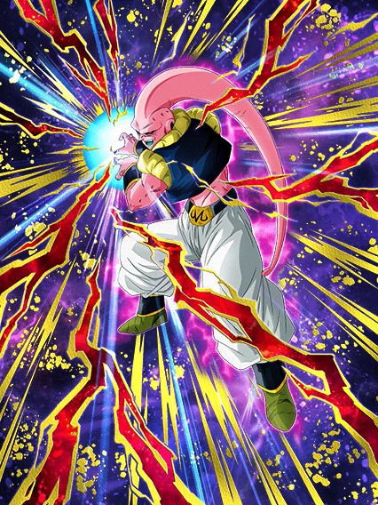
Bom esse cara é o pior dos 3, ele não faz nada de especial e só tem números brutos, única coisa é ele ter 70% de chance de lançar um super adicional por 6 turnos, realmente um card.
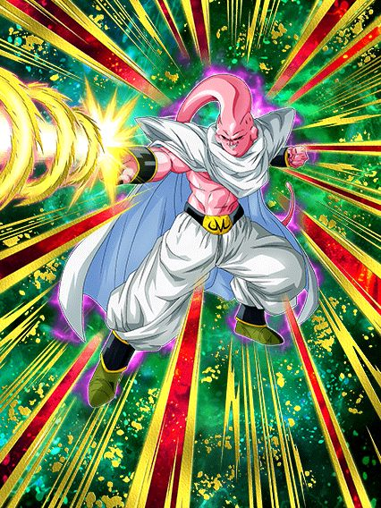
Tank insano.
Esse cara é um suporte, aumenta 100% DEF por super no turno, tem 50% de redução de dano e cura muita vida
Não é a transformação mais insana mas pô, muito bom
")
Noq eles realmente querem q vc se transforme.
Bom esse cara é obviamente o mais forte, tem 70% de chance de defesa ativa mas já tem defesa pra caramba, dano muito alto, cura vida, o cara tem tudo q precisa
Mas uma PEQUENA inconveniencia, é q a forma q eu descrevi as condições no começo é exatamente como tá escrita no jogo, ou seja, ele só absorve o gohan se estiver ABAIXO de 100% de HP, e olha, o time majin power cura bastante vida com as links e etc, então É BEM PROVÁVEL que vc vai chegar no turno 5 com a vida cheia, e isso simplesmente buga o super buu e ele não absorve ninguém
E é literalmente isso, ele só tem a chance de absorver naquele turno e se nada acontecer, vc vai ficar na forma base com ele pra sempre
Obrigado akatsuki pelas correções de bugs estúpidos 👍
Goku do Kai LR
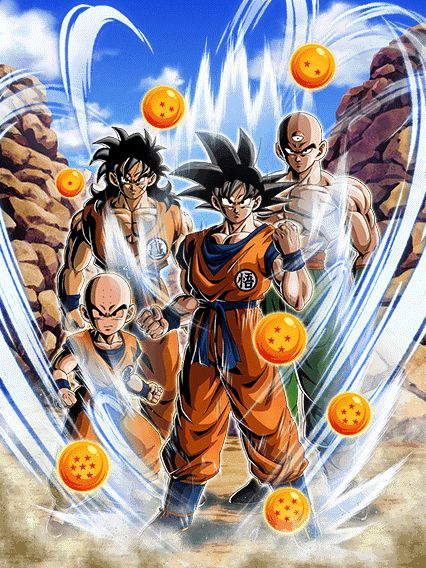
EU AMO esse card.
A intro desse card é tão calma e passa uma tranquilidade que rapaz, ele é muito bom.
As animações dele podem até não ser as melhores mas elas são muito boas, e a estética do card é boa, pena q ele é o segundo goku base do ano e já tá dando problema.
No geral o goku é um tank, tem defesa ativa por 6 turnos e stacka defesa no ultra super attack
Ele tmb tem a habilidade bizarra do yajirobe de sobreviver ataques q te matariam, oq é interessante em situações específicas onde vc não morra por 2 dígitos
Pra completar a habilidade defensiva ele tmb te cura 59% de HP quando estiver abaixo disso, oq é um semi-revive dependendo do turno, então maneiro.
O goku tmb tem 50% de counterar supers de ki, oq é um extra ali basicamente
Ele tmb ganha ki e chance de crítico por ataques tomados, e falando em tomar ataques..
O goku precisa tomar muitos ataques, mas infelizmente é bastante mesmo, já que com 5 ele ganha mais defesa, q é bem importante, mas tomar 9 ataques pra ganhar 120% de ATK é um pouquinho demais na minha opinião
Tipo, o salto do valor de ataque dele é absurdo, ele vai de 5 ou 6 milhões pra 13 milhões, é bem alto e junto com o crítico, facilita, mas pelo fato das lutas serem bem curtas e o goku levar um tempo pra ganhar defesa, jogar ele no slot 1 pra acelerar a buildagem é uma péssima ideia, especialmente quando os eventos recentes te dão um super turno 1 slot 1 e te deixam no chão
Esse é o maior e único problema do goku, tomar ataques até demais pra buildar, mas eu gosto dele, não é um card ruim, então é justo q ele não seja perfeito.
E ele tem uma active q parece q foi feita de última hora, mas boa, críticozinho garantido e um dano legal, mas um negócio é q usar a active depois de ganhar o buff de ATK daria mais dano mas é meio impossível pelo problema citado então, é.
Gohanzinho int
")
É um personagem q tanka bem mas falta um parceiro.
O gohan é baseado na opening do Z e tem animações bem nostálgicas, além de ter osts lindas, tipo, a ideia de basear cards em openings é muito boa.
Mas assim, não questione o pq da celebração genial de genki damas ter um gohan q não tem nada da genki dama no card
Falando sobre o card, ele vira um tank muito rápido pq ele builda DEF e ki tomando 8 ataques e stacka ATK e DEF no ultra super attack
Ele tmb tem um buff de intro q dá mais defesa por 4 turnos, oq tmb é muito bom.
O dano dele é maneiro mas leva tempo pra realmente ficar brabo já q além do stack ele precisa levar 5 ataques pra ganhar 58% de ATK.
Ele tmb fica efetivo contra tudo na active então é, dano não falta com certeza
No geral o principal bônus desse card mas tmb um problema é o fato de ele precisar de um goku ou um piccolo pra ativar o unit super do gohan e ele stackar 50% de ATK e 30% de DEF, mas isso ferra pq gokus slot 1 são poucos e piccolos pior ainda (o melhor q tem seria o piccolo int LR do world tournament q é bom sim com esse gohan)
Enfim, um card bom em geral q consegue stackar rápido se manter tranquilo pela partida, só precisa de parceiros de link melhores..
Eza do goku ssj genki dama absorvida

Eu quando o personagem nuker é nerfado por ser "forte demais"
Esse cara tem um dano maneiro, é orb changer e no geral decente, mas tem q ter um monte de super saiyans só pra ter um dano bom e ele ganha redução de dano por rainbow orb, mas.. só?
Se fosse orb agl também, ajudaria tanto a tankar mais tranquilo, mas é, de novo eles zuaram o personagem achando q ele ficaria forte demais, triste.
EZA do Goku SSJB Kaioken
")
O único card decente de universe survival saga do ano? 💀
Eu juro que era pra ser uma piada, mas realmente parece q eles vão no cara ou coroa pra decidir se o eza é bom ou não, felizmente esse cara é bom
Na vdd ele seria se USS fosse um time, já que usar qualquer outro card do time já te deixa em total desvantagem (o goku mui até vai, mas só ele não é o bastante)
Esse goku era um personagem q dava muito dano, pós-eza ele é O personagem que dá muito dano, com uma defesa minimamente decente considerando oq ele faz
O goku sempre stackou 50% de ATK por super, oq por si só já é quebrado, mas ele stackar isso com stats de eza faz cada stack ser muito absurdo e ele chegar fácil em valores altos demais
O grande bônus dele é que caso tenha 1 aliado USS ele ganha defesa ativa por 5 turnos, oq ajuda ele nos turnos iniciais já que ele builda um pouco de DEF tomando ataques
No geral foi só isso que adicionaram no eza dele que realmente fez diferença, ajudou muito o card a sobreviver e stackar pra usar.. a genki dama das genki damas

Infelizmente condições de active não mudam com eza, oq faz essa active ser difícil de ativar já q ele precisa ter 3 personagens representatives of universe 7 no time e estar abaixo de 59% de HP, mas tenha noção de q se vc stackar legal, pegar uns adicionais e pegar um crítico maneiro, essa genki dama é o ataque mais forte do jogo inteiro, e ela ainda buffa os aliados, quem achou que isso era balanceado?
Infelizmente pro goku, nesse ano não teve ninguém pra ajudar ele (eu não vou mencionar a kale), então ele tá meio sozinho por agora e isso não ajuda, já q com um time fraco sua defesa ativa acaba rápido e aí vc fica vulnerável já q não espere muito da defesa dele..
Mr.Satan F2P
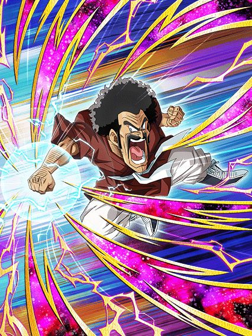
50% de chance de reviver.
Esse cara é lotado de 50% de coisas acontecerem, mas tipo.. 50% de chance de debuffar inimigos???
E outros 50% de chance de lançar um adicional caso o inimigo esteja debuffado..
No geral é só um card meio fraco que não faz muita coisa útil, pelo menos o revive dele, mesmo que muito difícil de pegar, é engraçado.
Babidi/Majin Vegeta LR f2p
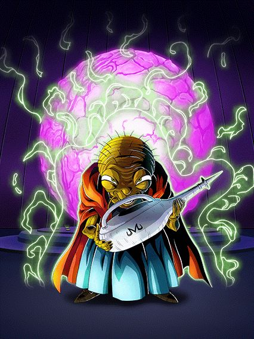
Card brabo, estranho e desperdiçado ao mesmo tempo.
Bom, o babidi ganhou outro LR de algum jeito, mas esse é decente
Ele é simples, é um suporte pra extreme em geral e tem 50% de desvio caso tenha um inimigo super class, acho q é isso q ele faz resumido
No geral ele não é muito doido, o kit dele não é nada mal pra um f2p e as animações dele são mehhh
Agora, a partir do turno 4 ele pode ativar a mecânica nova do aniversário (pq tem q ter um f2p com mecânica nova obrigatório)

Como esse momento incrível do vegeta veio parar num f2p?
Bom, o vegeta infelizmente possui sérios problemas
Ele não ataca na standy similar aos Z boys, mas o problema é q ele tenta ser um tank, mas n consegue
Parte disso é pelo fato de que apesar de ele não poder atacar, ele precisa de bastante ki, e isso é difícil pq quase todos os links do babidi mudam pra links saiyajins na standby, oq ferra os parceiros de link do card
E a outra parte é óbvia, ele é um f2p, não dá pra esperar um deus de um card gratuito
Claro, se vc pegar bastante ki ele é decente sim, e a standby dele é de acumular ki então é normal q vc pegue bastante, só fica ligado q apesar de ele precisar de ki, nem orb changer ele é ein kkkj 💀
E sobre as finish skills, as 2 dão o mesmo dano q uma barra de sabão no fim da vida, o vegeta acaba sendo mais útil como um "tank", doq realmente um nuker dos nukers q dá muito dano
No geral, óbvio q é um card de aniversário, ent podia ser melhor, mas não dá pra reclamar de um majin vegeta e as 3 osts desse card são insanas, a finish 2 em específico parece q veio de Doom, muito doido.
EZA DO GOGETA E VEGETTO BLUEEEE
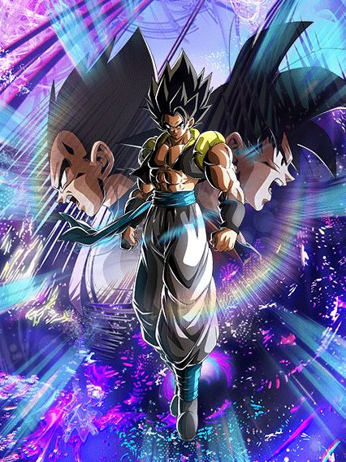 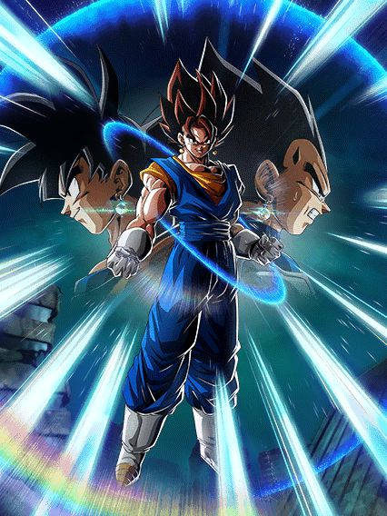
Cozinhar é pouco pra descrever oq fizeram com esses cards.
Eles decidiram fechar com chave de ouro o aniversário com os melhores ezas que existem, não é a toa q o quinto aniversario foi um dos mais hype, se não o mais hype de todos os outros
Enfim, na forma base e na maioria da passiva transformada tmb, o gogeta e vegetto tem o mesmo kit, no caso da forma base os dois literalmente são iguais, e se resumem a:
- Stack de 30% de ATK nos supers
- 70% de lançar um super adicional no slot 1 e 2
- Ganha mais ki, lança um adicional garantido e tem 70% de desvio no slot 3
A defesa deles pré-super e bem mid, mas pós supers eles tão de boa já q eles ganham bastante nos supers e ganham 100% a mais quando atacarem.
Bom, o gogeta e vegetto literalmente querem ser usados como irmãozinhos, sabe, se vc leva um, vc leva o outro pra não deixar um sozinho, mas isso não é a melhor das ideias já q uma rotação dos dois na forma base pode resultar em morte especialmente pré-super, mas depois de dar super eles conseguem pelo menos tankar os autoattack dos bosses brabos (ou a maioria pelo menos)
Enfim, diferente de outros cards eles tem a condição simples de automaticamente transformar a partir do turno 4.
Começando pelo gogeta:
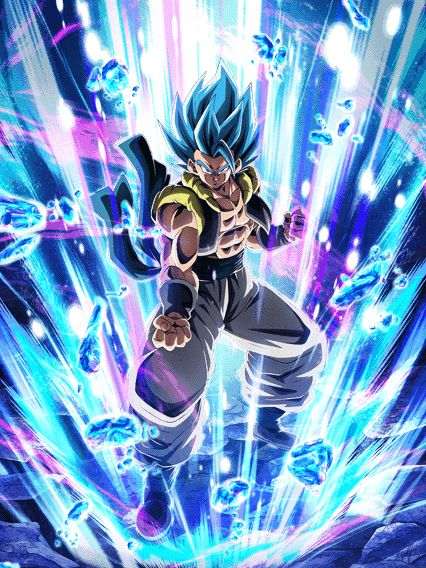
Crítico.
Os cards literalmente se tornam deuses do jogo já que pegaram tudo q tem de melhor e colocaram neles
O gogeta tem desvio garantido no turno onde ele se transformar, oq não é nem um pouco justo já que vc se torna imune a tudo a não ser q o boss cancele desvio, oq por si só já faz do card um top tier
Ele lança 2 adicionais com 30% de chance de serem supers oq não é das melhores mas tá ali
Ele tmb tem crítico garantido quando vc estiver com 24 de ki, e considerando q o gogeta ganha 7 de ki quando for atacar, fica mais fácil doq parece
E o aspecto mais importante das fusões é que a build dos dois foi acelerada mil vezes, já que agora, ao invés de buildar 77% de ATK e DEF fazendo 11 ataques (literalmente impossível por sinal), agora ele builda 88% de ATK e DEF com só 4 ataques, e a parte mais divertida é só serem ataques e não supers, e tmb o fato de q se vc pegar o adicional do hidden potential, o gogeta vai atacar 4 vezes já e ficar buildado pro resto da partida, coisa boa ein
Esses 88% dão uma diferença boa no dano, já q o salto nos números é alto e tem o crítico garantido por cima tmb
O grande problema do gogeta é que a defesa dele é boa pós buildar e pós super mas, se vc não pegar nenhum super adicional, dependendo do evento isso pode te custar a partida toda, já que o gogeta não tem defesa ativa ou redução de dano
O que ele tem defensivamente é que no slot 3 ele tem 70% de desvio e um super adicional garantido, oq dependendo da situação pode vir a calhar de ser útil então, fica ligado.
Apesar de ter uma certa falha na defesa, o Gogeta segue a regra de "a melhor defesa é o melhor ataque", e quando o oponente estiver abaixo de 50% de HP, vc pode usar A active q literalmente destrói qualquer coisa
A active com a build completa vai dar um crítico garantido lindão no oponente, e agora, eles tornaram esse eza ainda mais especial dando pro gogeta e pro vegetto novas OSTs nas actives, e ambas são…incríveis apenas.
Mas claro q não para por aí.. já que esses 2 manos foram os criadores praticamente do god-mode, já que eles tem um que agora é absurdo
Os buffs de slot das fusões ativam quando eles atacam, e como a active é um ataque.. já sabe né?
Se tudo mencionado acima não foi o bastante, agora vc tem 70% de chance de desvio, pelo menos 2 supers garantidos (se vc der muita sorte podem ser 5), todos críticos e considerando q a active em si já dá um dano do caramba, o resultado fica óbvio.
E agora, o vegetto (my goat):

Adicionais.
Do mesmo jeito q o gogeta, o vegetto tmb ganha desvio garantido no turno da transformação e builda 88% de ATK e DEF com 4 ataques, só que aí vem o grande diferencial do rapaz..
O vegetto não é efetivo ou tem crítico garantido, mas sabe oq ele tem? Exatamente, isto, adicionais. Bastante adicionais.
O vegetto tem o seguinte:
- Primeiro super (meio óbvio)
- Super adicional garantido
- 30% De chance de dar outro super adicional
- Super adicional caso vc tenha 24 de ki
- Adicional do hidden potential
Não só é quase garantido q o vegetto vai estar buildado na primeira aparição garantido, mas ele tem uma vantagem muito maior q coloca ele 1 pouquinho acima do gogeta
Ambas fusões aumentam 50% de ATK e DEF por 1 turno nos supers, e aí vc já entende o raciocínio quando percebe q enquanto o gogeta pode dar 4 supers com muita sorte, o vegetto pode dar 4 sem dificuldades e um quinto a mais, tem noção de quanta defesa é isso?
O vegetto pós supers facilmente tá acima de 1 milhão de defesa, isso já ótimo pra tankar quase tudo sem precisar do desvio, além do dano absurdo claro, e se vc usar o cérebro decentemente e colocar todo o crítico do universo nele, tem a chance de ele simplesmente critar em 5 supers seguidos de graça, diferente do gogeta q só pode fazer isso no god-mode dele
E falando sobre o god-mode, o buff q o gogeta ganha no slot 3 é o mesmo do vegetto, ou seja, dá pra colocar outro super adicional na lista, totalizando 6 SUPERS e 70% de desvio, e de novo, o vegetto pode não ter crítico garantido, mas o hidden potential totalizado compensa demais, é muito crítico véi
Bom, em resumo, os dois são completamente insanos é desbalanceados, caso vc use os 2 juntos em blue, praticamente nada sobrevive a eles caso vc use as actives só pelo dano e juntando com o desvio vc tem um card q não obrigatoriamente precisa de defesa ativa ou 50% de redução de dano pra ser bom.
Os dois tão sempre por aí, ainda no top 10 LRs e seguem assim, já q o valor q eles tem num time é muito alto pela utilidade e dano.
Você chegou ao fim dessa página!
Obrigado por ler tudo, e fica a vontade pra ver outras